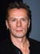

U2
Biografía
U2 es una banda de de rock perteneciente a la "New Wave", y originaria de Dublín (Irlanda). Sus letras, a menudo ordenadas con imágenes espirituales, se centran en temas personales y temática de justicia social y paz. U2 se formó en la Mount Temple Comprehensive School, cuando sus miembros iniciales eran adolescentes y tenían un limitado conocimiento musical. Al cabo de cuatro años, firmaron su primer contrato discográfico con Island Records y lanzaron su álbum debut, Boy. A mediados de los años ochenta, la banda pasó a ser conocida mundialmente. Tuvieron más éxito como artistas en vivo que como artistas comerciales por lo que a venta de álbumes se refiere, hasta su álbum de 1987 que los catapulto a la fama, The Joshua Tree, el cual según la revista Rolling Stone, elevó a la banda «de héroes a superestrellas».
Miembros
 Paul Hewson (1960)
"Bono"
Paul Hewson (1960)
"Bono"
- David Evans (1961) "The Edge"
- Adam Clayton (1960)
-  Larry Mullen Jr. (1961)
Video
Discografía
- Three EP (1979)
- Boy (1980)
- October (1981)
- War (1983)
- The Unforgettable Fire (1984)
- The Joshua Tree (1987)
- Rattle and Hum (1988)
- Achtung Baby (1991)
- Zooropa (1993)
- Pop (1997)
- All That You Can't Leave Behind (2000)
- How to Dismantle an Atomic Bomb (2004)
- No Line on the Horizon (2009)
- Songs of Innocence (2014)
Lista de Canciones de su último album
Songs of Innocence (2014)
CD1
- The Miracle (of Joey Ramone)
- Every Breaking Wave
- California (There Is No End To Love)
- Song For Someone
- Iris (Hold Me Close)
- Volcano
- Raised By Wolves
- Cedarwood Road
- Sleep Like A Baby Tonight
- This Is Where You Can Reach Me Now
- The Troubles
CD2
- Lucifer's Hands
- The Crystal Ballroom
- Every Breaking Wave (From Acoustic Sessions)
- California (There Is No End To Love) (From Acoustic Sessions)
- Raised By Wolves (From Acoustic Sessions)
- Cedarwood Road (From Acoustic Sessions)
- Song For Someone (From Acoustic Sessions)
- The Miracle (Of Joey Ramone) (Busker Version)
- The Troubles (Alternative Version)
- Sleep Like A Baby Tonight (Alternative Perspective Mix by Tchad Blake)
Tour 2015
-
Barcelona, Palau Sant Jordi -
Barcelona, Palau Sant Jordi